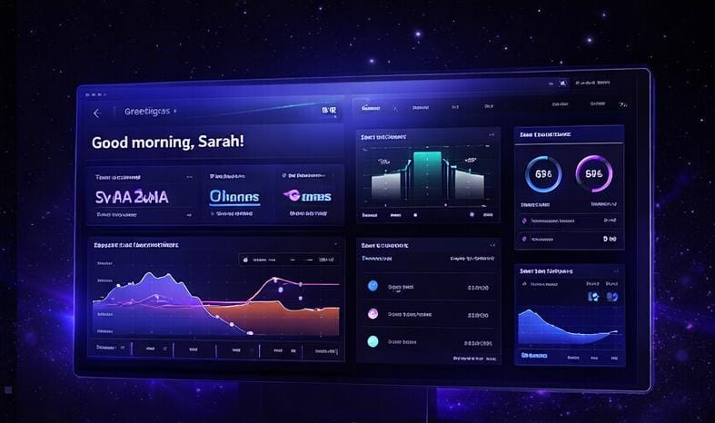
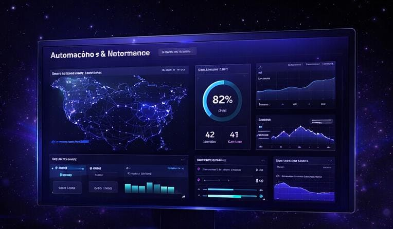

Desenvolvemos soluções digitais funcionais para fortalecer sua presença e ampliar seus resultados.
SERVIÇOS & PORTFÓLIO
Projetamos e desenvolvemos sistemas digitais de alta performance
para empresas que operam em outro nível.

Arquitetura de Sistemas Digitais
Planejamento técnico da solução para garantir organização, escalabilidade e segurança desde o início.

Desenvolvimento Web
Criação de sites, páginas institucionais e sistemas personalizados com foco em desempenho e experiência do usuário.

Automação & Integrações
Conectamos ferramentas, APIs e processos para reduzir tarefas manuais e aumentar eficiência operacional.

Infraestrutura & Performance
Ajustamos estrutura, carregamento e estabilidade para que sua solução funcione com rapidez e confiança.
Empresas parceiras
Conheça alguns exemplos fictícios de empresas que confiaram na Turing System para modernizar sua presença digital e aprimorar seus processos.
NovaPulse
Desafio: melhorar a presença online e organizar o atendimento.
Solução: desenvolvimento de um site moderno e otimização dos processos digitais.
Resultado: mais profissionalismo, eficiência e novos clientes.
Vértice Logística
Desafio: tornar a operação digital mais prática e coerente com a qualidade da empresa.
Solução: reestruturação da apresentação digital e melhoria no contato com clientes.
Resultado: mais confiança, competitividade e agilidade.
Lumera Tech
Desafio: comunicar soluções com mais clareza e fortalecer a imagem da marca.
Solução: criação de um ambiente digital mais atrativo, organizado e eficiente.
Resultado: melhor comunicação e mais credibilidade no mercado.